**Assignment 0 Report**
AndrewID: XXXX
(##) About this template
* You can view your writeup by opening it in a browser - right click this file and open with your browser of choice.
* Replace reference images with your own screenshots or renders when applicable.
* Include descriptions of any encountered problems and the time you spent on each task.
(##) A0T1
Step 1: Clone
or
Step 2: General Setup
Visual Studio:
Node:
Nest-libs:
Step 3: Build and Run
(##) A0T2
S1T1:
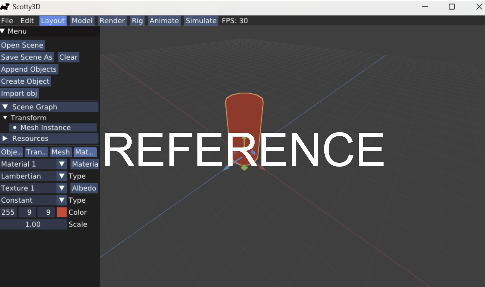
S1T2:
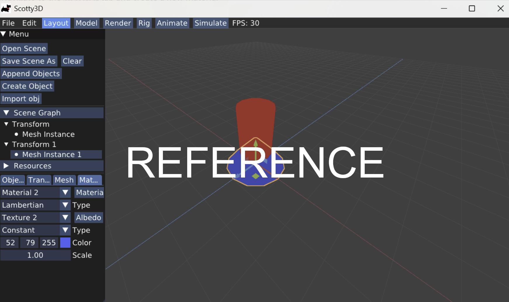
S1T3:
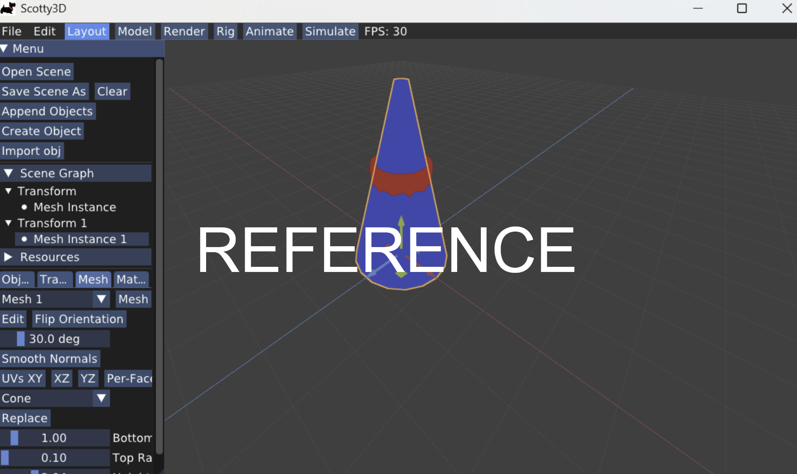
S1T4:
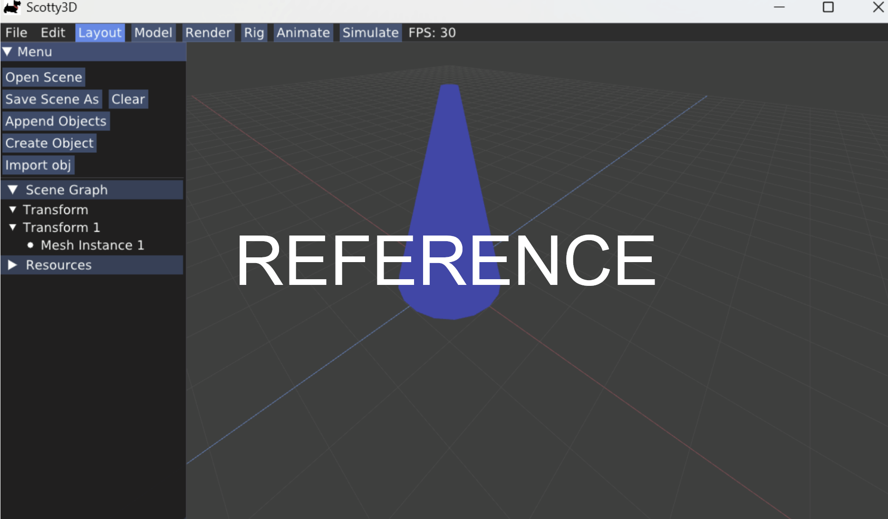
S2T2:
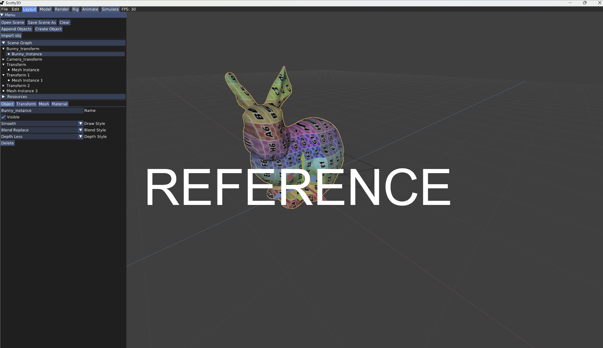
S2T3:
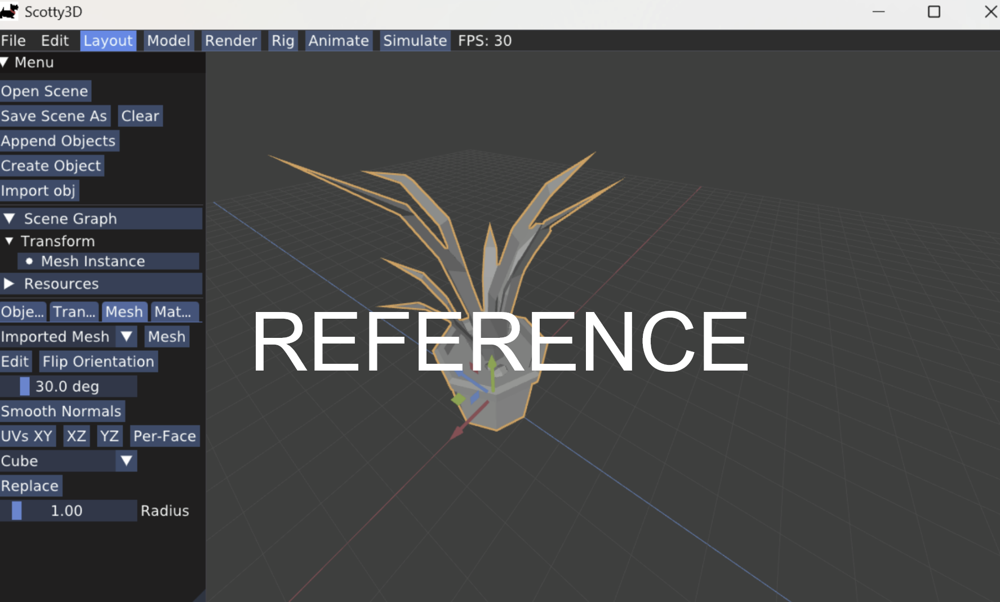
S3T1:
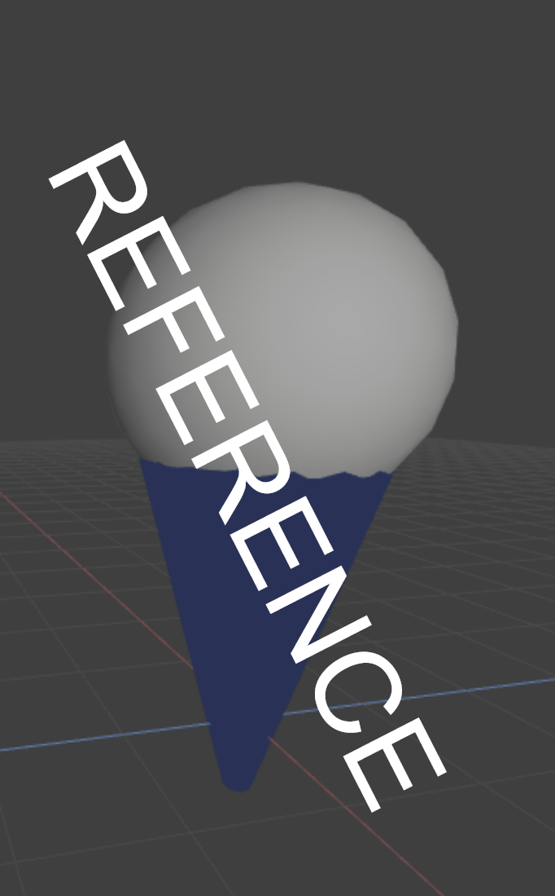
S3T2:
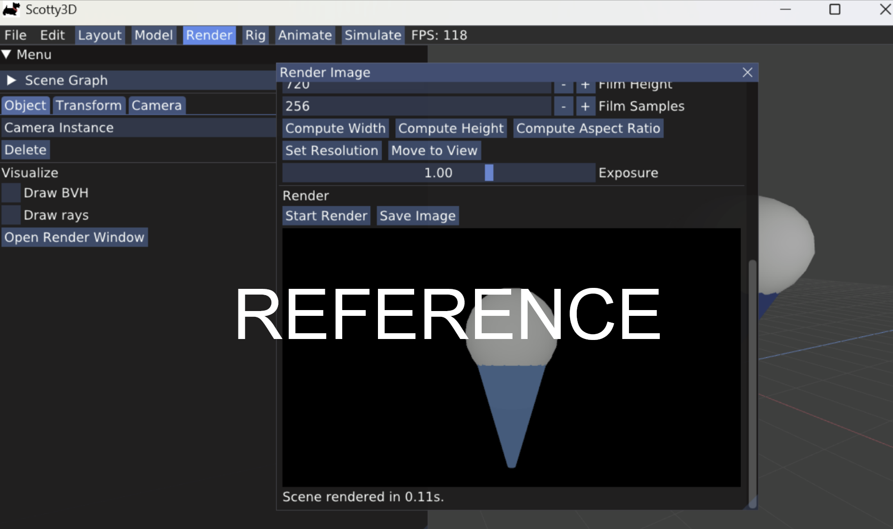
S4T1a:
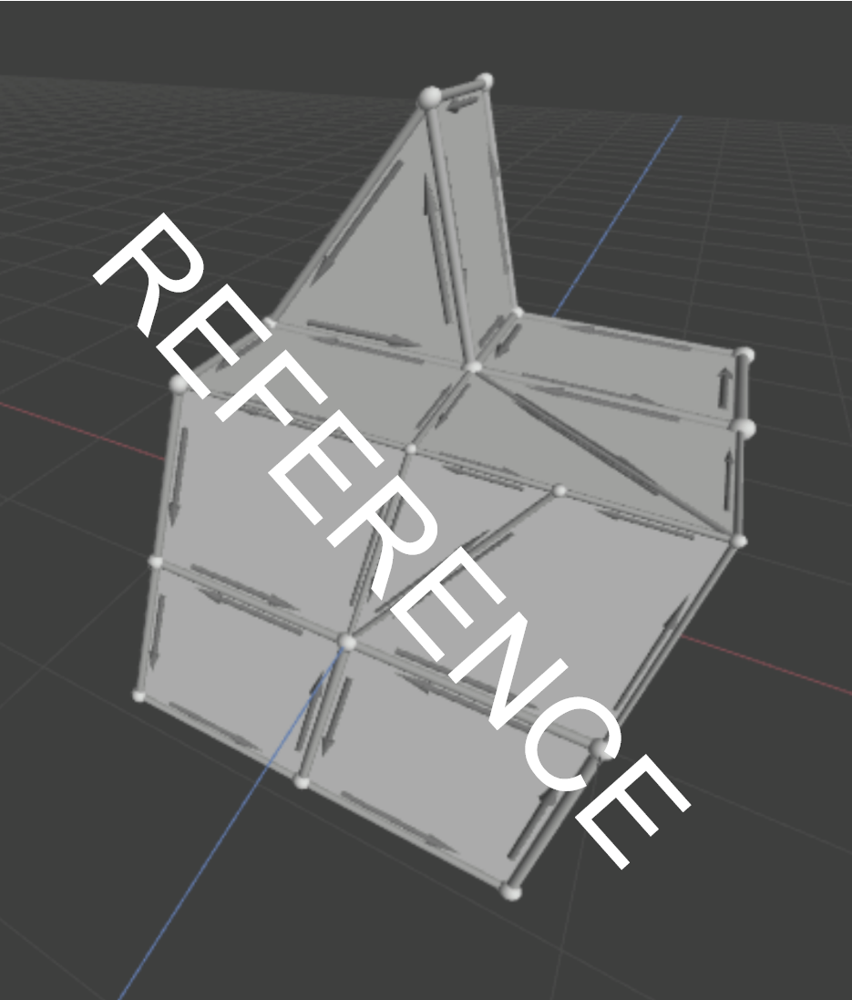
S4T1b: Which operations did he use to model his house?
S5T1a: Describe the differences you see when rasterizing vs path tracing
S5Tb: With path tracing selected, modify the number of film samples. What changes when you increase the film samples? Decrease?
S5T1c: Describe the changes you made to the materials
S6T1a:
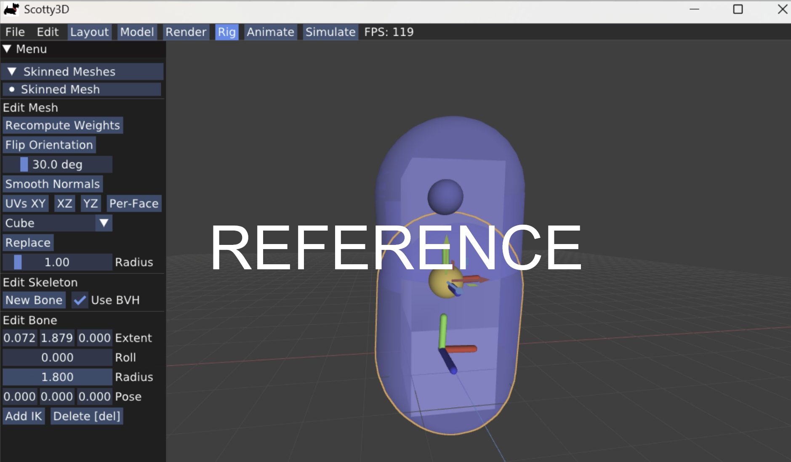
S6T1b:
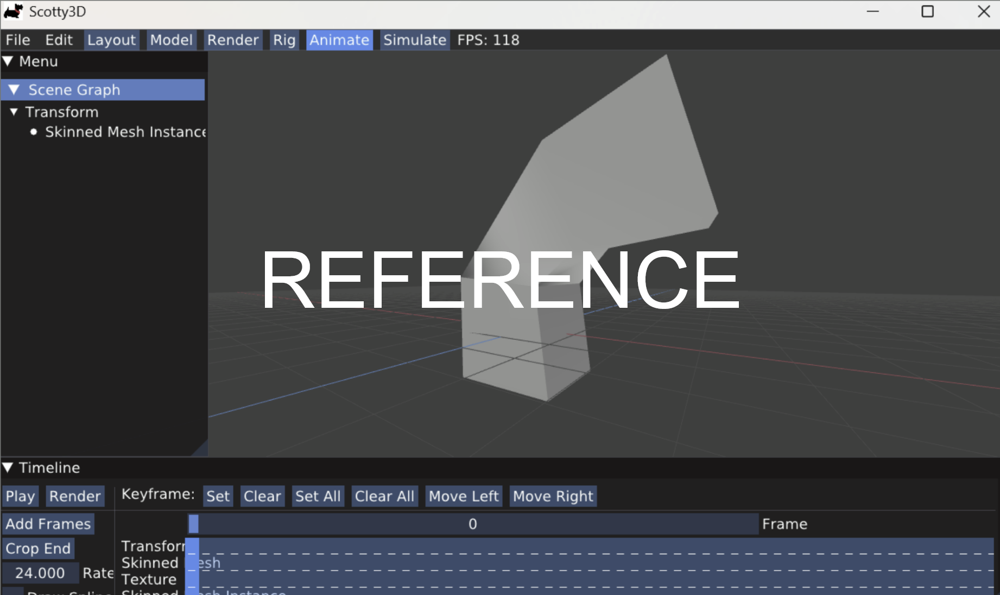
S6T2:
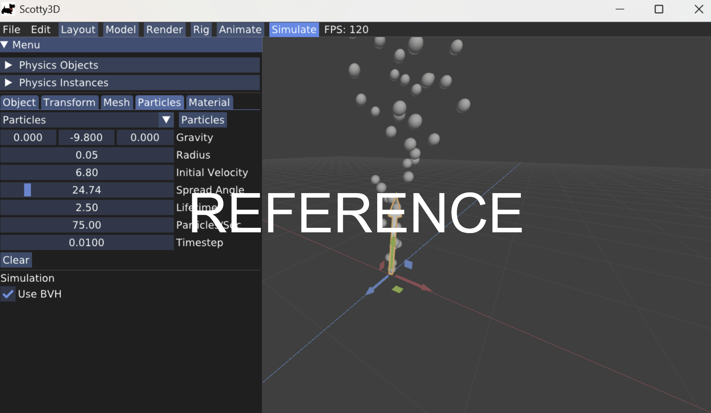
(##) A0T3
Your completion of this task will be graded based on your `test.a0.task3.problems.cpp` file and your responses to the below questions.
For each of the problems you solved in task 3, characterise the bug in your own words and explain one other scenario that may cause this
type of bug.
Problem 1:
Problem 2:
Problem 3:
Problem 4:
(##) A0T4
You do not need any screenshots for this task. Your completion will be graded based on your `src` submission.
(##) A0T5
You do not need any screenshots for this task.
(##) GenAI Use
Which model(s) did you use (e.g., ChatGPT-4, Claude-2, etc.)?
For what purpose(s) did you use GenAI (e.g., brainstorming, code generation, debugging, etc.)?
What was it good at? What was it bad at?
(##) Feedback
Use this section to provide feedback about the assignment.